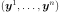
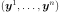
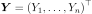
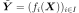
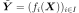

MCMC¶
-
class
MCMC(*args)¶ Monte-Carlo Markov Chain.
- Available constructor:
MCMC(prior, conditional, observations, initialState)
MCMC(prior, conditional, model, parameters, observations, initialState)
Parameters: - prior :
Distribution Prior distribution of the parameters of the underlying Bayesian statistical model.
- conditional :
Distribution Required distribution to define the likelihood of the underlying Bayesian statistical model.
- model :
Function Function required to define the likelihood.
- observations : 2-d sequence of float
Observations required to define the likelihood.
- initialState : sequence of float
Initial state of the Monte-Carlo Markov chain on which the Sampler is based.
- parameters : 2-d sequence of float
Parameters of the model to be fixed.
Notes
MCMC provides a implementation of the concept of sampler, using a Monte-Carlo Markov Chain (MCMC) algorithm starting from initialState. More precisely, let be the PDF of its target distribution and its dimension, be the PDF of the prior distribution,
 be the PDF of the conditional distribution
when its parameters are set to
be the PDF of the conditional distribution
when its parameters are set to  ,
,  be the number of
scalar parameters of conditional distribution (which corresponds to the
dimension of the above ), be the function
corresponding to model and  be the
sample observations (of size
be the number of
scalar parameters of conditional distribution (which corresponds to the
dimension of the above ), be the function
corresponding to model and  be the
sample observations (of size  ):
):In the first usage, it creates a sampler based on a MCMC algorithm whose target distribution is defined by:
In the second usage, it creates a sampler based on a MCMC algorithm whose target distribution is defined by:

where the
 () are such that:
() are such that:In fact, the first usage is a particular case of the second.
The MCMC method implemented is the Random Walk Metropolis-Hastings algorithm. A sample can be generated only through the MCMC’s derived class:
RandomWalkMetropolisHastings.Methods
computeLogLikelihood(currentState)Compute the logarithm of the likelihood w.r.t. getAntecedent()Accessor to the antecedent RandomVector in case of a composite RandomVector. getBurnIn()Get the length of the burn-in period. getClassName()Accessor to the object’s name. getConditional()Get the conditional distribution. getCovariance()Accessor to the covariance of the RandomVector. getDescription()Accessor to the description of the RandomVector. getDimension()Accessor to the dimension of the RandomVector. getDistribution()Accessor to the distribution of the RandomVector. getDomain()Accessor to the domain of the Event. getFunction()Accessor to the Function in case of a composite RandomVector. getHistory()Get the history storage. getId()Accessor to the object’s id. getMarginal(*args)Get the random vector corresponding to the  marginal component(s).
marginal component(s).getMean()Accessor to the mean of the RandomVector. getModel()Get the model. getName()Accessor to the object’s name. getNonRejectedComponents()Get the components to be always accepted. getObservations()Get the observations. getOperator()Accessor to the comparaison operator of the Event. getParameter()Accessor to the parameter of the distribution. getParameterDescription()Accessor to the parameter description of the distribution. getParameters()Get the parameters. getPrior()Get the prior distribution. getProcess()Get the stochastic process. getRealization()Compute one realization of the RandomVector. getSample(size)Compute realizations of the RandomVector. getShadowedId()Accessor to the object’s shadowed id. getThinning()Get the thinning parameter. getThreshold()Accessor to the threshold of the Event. getVerbose()Tell whether the verbose mode is activated or not. getVisibility()Accessor to the object’s visibility state. hasName()Test if the object is named. hasVisibleName()Test if the object has a distinguishable name. isComposite()Accessor to know if the RandomVector is a composite one. setBurnIn(burnIn)Set the length of the burn-in period. setDescription(description)Accessor to the description of the RandomVector. setHistory(strategy)Set the history storage. setName(name)Accessor to the object’s name. setNonRejectedComponents(nonRejectedComponents)Set the components to be always accepted. setObservations(observations)Set the observations. setParameter(parameters)Accessor to the parameter of the distribution. setParameters(parameters)Set the parameters. setPrior(prior)Set the prior distribution. setShadowedId(id)Accessor to the object’s shadowed id. setThinning(thinning)Set the thinning parameter. setVerbose(verbose)Set the verbose mode. setVisibility(visible)Accessor to the object’s visibility state. -
__init__(*args)¶ Initialize self. See help(type(self)) for accurate signature.
-
computeLogLikelihood(currentState)¶ Compute the logarithm of the likelihood w.r.t. observations.
Parameters: - currentState : sequence of float
Current state.
Returns: - logLikelihood : float
Logarithm of the likelihood w.r.t. observations .
-
getAntecedent()¶ Accessor to the antecedent RandomVector in case of a composite RandomVector.
Returns: - antecedent :
RandomVector Antecedent RandomVector
 in case of a
in case of a
CompositeRandomVectorsuch as: .
.
- antecedent :
-
getBurnIn()¶ Get the length of the burn-in period.
Returns: - lenght : int
Length of the burn-in period, that is the number of first iterates of the MCMC chain which will be thrown away when generating the sample.
-
getClassName()¶ Accessor to the object’s name.
Returns: - class_name : str
The object class name (object.__class__.__name__).
-
getConditional()¶ Get the conditional distribution.
Returns: - conditional :
Distribution Distribution taken into account in the definition of the likelihood, whose PDF with parameters
corresponds to
in the equations of the
target distribution’s PDF.
- conditional :
-
getCovariance()¶ Accessor to the covariance of the RandomVector.
Returns: - covariance :
CovarianceMatrix Covariance of the considered
UsualRandomVector.
Examples
>>> import openturns as ot >>> distribution = ot.Normal([0.0, 0.5], [1.0, 1.5], ot.CorrelationMatrix(2)) >>> randomVector = ot.RandomVector(distribution) >>> ot.RandomGenerator.SetSeed(0) >>> print(randomVector.getCovariance()) [[ 1 0 ] [ 0 2.25 ]]
- covariance :
-
getDescription()¶ Accessor to the description of the RandomVector.
Returns: - description :
Description Describes the components of the RandomVector.
- description :
-
getDimension()¶ Accessor to the dimension of the RandomVector.
Returns: - dimension : positive int
Dimension of the RandomVector.
-
getDistribution()¶ Accessor to the distribution of the RandomVector.
Returns: - distribution :
Distribution Distribution of the considered
UsualRandomVector.
Examples
>>> import openturns as ot >>> distribution = ot.Normal([0.0, 0.0], [1.0, 1.0], ot.CorrelationMatrix(2)) >>> randomVector = ot.RandomVector(distribution) >>> ot.RandomGenerator.SetSeed(0) >>> print(randomVector.getDistribution()) Normal(mu = [0,0], sigma = [1,1], R = [[ 1 0 ] [ 0 1 ]])
- distribution :
-
getDomain()¶ Accessor to the domain of the Event.
Returns: - domain :
Domain Describes the domain of an event.
- domain :
-
getFunction()¶ Accessor to the Function in case of a composite RandomVector.
Returns: - function :
Function Function used to define a
CompositeRandomVectoras the image through this function of the antecedent:
.
- function :
-
getHistory()¶ Get the history storage.
Returns: - history :
HistoryStrategy Used to record the chain.
- history :
-
getId()¶ Accessor to the object’s id.
Returns: - id : int
Internal unique identifier.
-
getMarginal(*args)¶ Get the random vector corresponding to the
marginal component(s).Parameters: - i : int or list of ints,

Indicates the component(s) concerned.
 is the dimension of the
RandomVector.
is the dimension of the
RandomVector.
Returns: - vector :
RandomVector RandomVector restricted to the concerned components.
Notes
Let’s note  a random vector and
![I \in [1,n]](../../_images/math/af6589225695f7bb6b5d7236ccb1a6626b557dbe.svg) a set of indices. If
a set of indices. If  is a
is a
UsualRandomVector, the subvector is defined by . If is a
. If is a
CompositeRandomVector, defined by with  ,
,
 some scalar functions, the subvector is
.
some scalar functions, the subvector is
.Examples
>>> import openturns as ot >>> distribution = ot.Normal([0.0, 0.0], [1.0, 1.0], ot.CorrelationMatrix(2)) >>> randomVector = ot.RandomVector(distribution) >>> ot.RandomGenerator.SetSeed(0) >>> print(randomVector.getMarginal(1).getRealization()) [0.608202] >>> print(randomVector.getMarginal(1).getDistribution()) Normal(mu = 0, sigma = 1)
- i : int or list of ints,
-
getMean()¶ Accessor to the mean of the RandomVector.
Returns: - mean :
Point Mean of the considered
UsualRandomVector.
Examples
>>> import openturns as ot >>> distribution = ot.Normal([0.0, 0.5], [1.0, 1.5], ot.CorrelationMatrix(2)) >>> randomVector = ot.RandomVector(distribution) >>> ot.RandomGenerator.SetSeed(0) >>> print(randomVector.getMean()) [0,0.5]
- mean :
-
getModel()¶ Get the model.
Returns: - model :
Function Model take into account in the definition of the likelihood, which corresponds to
 , that is the functions
(
, that is the functions
( ) in the equation of the
target distribution’s PDF.
) in the equation of the
target distribution’s PDF.
- model :
-
getName()¶ Accessor to the object’s name.
Returns: - name : str
The name of the object.
-
getNonRejectedComponents()¶ Get the components to be always accepted.
Returns: - nonRejectedComponents :
Indices The indices of the components that are not tuned, and sampled according to the prior distribution in order to take into account the intrinsic uncertainty, as opposed to the epistemic uncertainty corresponding to the tuned variables.
- nonRejectedComponents :
-
getObservations()¶ Get the observations.
Returns: - observations :
Sample Sample taken into account in the definition of the likelihood, which corresponds to the
-tuple of the  () in equations of the
target distribution’s PDF.
() in equations of the
target distribution’s PDF.
- observations :
-
getOperator()¶ Accessor to the comparaison operator of the Event.
Returns: - operator :
ComparisonOperator Comparaison operator used to define the
Event.
- operator :
-
getParameter()¶ Accessor to the parameter of the distribution.
Returns: - parameter :
Point Parameter values.
- parameter :
-
getParameterDescription()¶ Accessor to the parameter description of the distribution.
Returns: - description :
Description Parameter names.
- description :
-
getParameters()¶ Get the parameters.
Returns: - parameters :
Point Fixed parameters of the model
required to define the likelihood.
- parameters :
-
getPrior()¶ Get the prior distribution.
Returns: - prior :
Distribution The prior distribution of the parameter of the underlying Bayesian statistical model, whose PDF corresponds to in the equations of the target distribution’s PDF.
- prior :
-
getProcess()¶ Get the stochastic process.
Returns:
-
getRealization()¶ Compute one realization of the RandomVector.
Returns: - aRealization :
Point Sequence of values randomly determined from the RandomVector definition. In the case of an event: one realization of the event (considered as a Bernoulli variable) which is a boolean value (1 for the realization of the event and 0 else).
See also
Examples
>>> import openturns as ot >>> distribution = ot.Normal([0.0, 0.0], [1.0, 1.0], ot.CorrelationMatrix(2)) >>> randomVector = ot.RandomVector(distribution) >>> ot.RandomGenerator.SetSeed(0) >>> print(randomVector.getRealization()) [0.608202,-1.26617] >>> print(randomVector.getRealization()) [-0.438266,1.20548]
- aRealization :
-
getSample(size)¶ Compute realizations of the RandomVector.
Parameters: - n : int,

Number of realizations needed.
Returns: - realizations :
Sample n sequences of values randomly determined from the RandomVector definition. In the case of an event: n realizations of the event (considered as a Bernoulli variable) which are boolean values (1 for the realization of the event and 0 else).
See also
Examples
>>> import openturns as ot >>> distribution = ot.Normal([0.0, 0.0], [1.0, 1.0], ot.CorrelationMatrix(2)) >>> randomVector = ot.RandomVector(distribution) >>> ot.RandomGenerator.SetSeed(0) >>> print(randomVector.getSample(3)) [ X0 X1 ] 0 : [ 0.608202 -1.26617 ] 1 : [ -0.438266 1.20548 ] 2 : [ -2.18139 0.350042 ]
- n : int,
-
getShadowedId()¶ Accessor to the object’s shadowed id.
Returns: - id : int
Internal unique identifier.
-
getThinning()¶ Get the thinning parameter.
Returns: - thinning : int
Thinning parameter: storing only every
 point after the
burn-in period.
point after the
burn-in period.
Notes
When generating a sample of size
 , the number of MCMC iterations
performed is where
, the number of MCMC iterations
performed is where  is the burn-in period length
and
is the burn-in period length
and  the thinning parameter.
the thinning parameter.
-
getThreshold()¶ Accessor to the threshold of the Event.
Returns: - threshold : float
Threshold of the
Event.
-
getVerbose()¶ Tell whether the verbose mode is activated or not.
Returns: - isVerbose : bool
The verbose mode is activated if it is True, desactivated otherwise.
-
getVisibility()¶ Accessor to the object’s visibility state.
Returns: - visible : bool
Visibility flag.
-
hasName()¶ Test if the object is named.
Returns: - hasName : bool
True if the name is not empty.
-
hasVisibleName()¶ Test if the object has a distinguishable name.
Returns: - hasVisibleName : bool
True if the name is not empty and not the default one.
-
isComposite()¶ Accessor to know if the RandomVector is a composite one.
Returns: - isComposite : bool
Indicates if the RandomVector is of type Composite or not.
-
setBurnIn(burnIn)¶ Set the length of the burn-in period.
Parameters: - lenght : int
Length of the burn-in period, that is the number of first iterates of the MCMC chain which will be thrown away when generating the sample.
-
setDescription(description)¶ Accessor to the description of the RandomVector.
Parameters: - description : str or sequence of str
Describes the components of the RandomVector.
-
setHistory(strategy)¶ Set the history storage.
Parameters: - history :
HistoryStrategy Used to record the chain.
- history :
-
setName(name)¶ Accessor to the object’s name.
Parameters: - name : str
The name of the object.
-
setNonRejectedComponents(nonRejectedComponents)¶ Set the components to be always accepted.
Parameters: - nonRejectedComponents : sequence of int
The indices of the components that are not tuned, and sampled according to the prior distribution in order to take into account the intrinsic uncertainty, as opposed to the epistemic uncertainty corresponding to the tuned variables.
-
setObservations(observations)¶ Set the observations.
Parameters: - observations : 2-d sequence of float
Sample taken into account in the definition of the likelihood, which corresponds to the
-tuple of the
() in the equations of the
target distribution’s PDF.
-
setParameter(parameters)¶ Accessor to the parameter of the distribution.
Parameters: - parameter : sequence of float
Parameter values.
-
setParameters(parameters)¶ Set the parameters.
Parameters: - parameters : sequence of float
Fixed parameters of the model
required to define the likelihood.
-
setPrior(prior)¶ Set the prior distribution.
Parameters: - prior :
Distribution The prior distribution of the parameter of the underlying Bayesian statistical model, whose PDF corresponds to in the equations of the target distribution’s PDF.
- prior :
-
setShadowedId(id)¶ Accessor to the object’s shadowed id.
Parameters: - id : int
Internal unique identifier.
-
setThinning(thinning)¶ Set the thinning parameter.
Parameters: - thinning : int,
Thinning parameter: storing only every
point after the
burn-in period.
Notes
When generating a sample of size
, the number of MCMC iterations
performed is where is the burn-in period length
and the thinning parameter.
-
setVerbose(verbose)¶ Set the verbose mode.
Parameters: - isVerbose : bool
The verbose mode is activated if it is True, desactivated otherwise.
-
setVisibility(visible)¶ Accessor to the object’s visibility state.
Parameters: - visible : bool
Visibility flag.